Hinter den Kulissen
PWA Invite Console
Eine kleine Konsole für Einladungen und Geräte in privaten Web-Apps.
Stelle eine Frage zu Bankdaten. Erkunde das passende Schema. Erhalte einen bearbeitbaren SQL-Entwurf.
Das Live-Event PWA ist nur auf Einladung möglich.
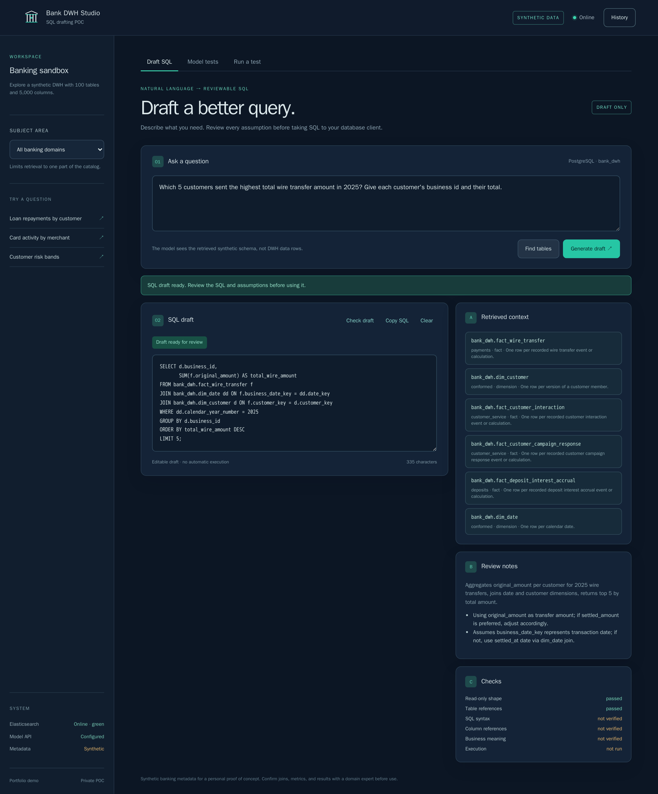
Bank DWH Studio ist ein persönlicher Proof of Concept für die Erkundung eines großen Bankdatenlagers mithilfe natürlicher Sprache. Stellen Sie eine Frage, wählen Sie optional einen Bankthemenbereich aus, und die App ruft den relevantesten Schemakontext ab, bevor PostgreSQL SQL erstellt wird.
Das Ergebnis ist bewusst mehr als ein Codeblock. Es zeigt die abgerufenen Tabellen, Interpretationen, Annahmen, Überprüfungsnotizen und grundlegenden Überprüfungen neben einem bearbeitbaren Entwurf. Wenn ein notwendiges Detail fehlt – wie zum Beispiel das Jahr in einer Ende-August-Anfrage – kann der Assistent um Klarstellung bitten.
Eine generierte Bank-Warehouse-Fixture bietet 5.000 Spalten, Beziehungen, PostgreSQL DDL, einen Katalog und einen kleinen Startwert.
Elasticsearch schränkt einen großen Katalog auf die für die Frage erforderlichen Metadaten ein, bevor etwas an das Modell gesendet wird.
Abgerufene Tabellen, Interpretationen, Annahmen, Notizen und Überprüfungen bleiben sichtbar, sodass der Entwurf angefochten und nicht blind akzeptiert werden kann.
Jede Antwort, auch eine Rückfrage an Sie, wird in einem Verlauf auf Ihrem Gerät gespeichert. Stellen Sie einen früheren Entwurf wieder her oder löschen Sie die, die Sie nicht mehr brauchen.
Zwei Tabs zeigen jeden Benchmark-Lauf, gekennzeichnet als offene oder geschlossene Gewichte, exportieren die Ergebnisse als PDF und lassen freigegebene Geräte ein neues Modell testen, auf einer gemieteten GPU oder über OpenRouter, mit Live-Fortschritt.
Die nur auf Einladung zugängliche Schnittstelle ist installierbar und passt sich von breiten Desktop-Bildschirmen bis hin zu kompakten Telefonen an.
Ein Werkzeug, das SQL schreibt, ist nur so nützlich, wie sein SQL korrekt ist. Deshalb misst das Repository genau das, statt es einfach anzunehmen.
Ein Modell-Benchmark stellt 46 schwierige Fragen, jede dreimal. Fragen mit genau einer richtigen Antwort werden bewertet, indem der Entwurf gegen eine befüllte PostgreSQL-Kopie des Warehouse ausgeführt wird. Fragen zu Daten, die das Warehouse nicht enthält, etwa Gehälter oder Kundenabwanderung, sollten mit einer Rückfrage beantwortet werden. Anfragen, Daten zu ändern, dürfen den Nutzer nie erreichen.
Die wichtigste Zahl ist, wie oft ein Modell selbstsicher falsch liegt: ein Entwurf, der läuft, aber das falsche Ergebnis liefert, oder eine Antwort zu Daten, die es nicht gibt. Beides sieht wie eine echte Antwort aus, und genau das macht es riskant.
Jedes Modell beantwortet dieselben Fragen zweimal. Zuerst verwendet das Warehouse beschreibende Namen wie fact_account_balance_daily. Dann verwendet es kryptische Namen, abgekürzt wie in älteren Bank-Warehouses, etwa F_ACCT_BAL_D, wobei die Spaltenbeschreibungen erhalten bleiben. Die Daten und die richtigen Antworten bleiben gleich.
Alle drei fragten jedes Mal nach, wenn sie es sollten, und die SQL-Prüfung fing jeden Schreibversuch von gpt-oss-20b ab.
Jedes offene Modell verlor zwischen 22 und 39 Punkte. Die neuen Fehler waren genau die, die lesbare Namen verhindert hatten: eine geratene Spalte oder eine Tabelle, die aus ihrer Abkürzung falsch gedeutet wurde. Keines der offenen Modelle ließ einen Schreibzugriff durch.
Die geschlossenen Modelle dienen nur zum Vergleich. Sie könnten nicht auf der eigenen Hardware einer Bank laufen und werden deshalb über OpenRouter aufgerufen. Modelle mit offenen Gewichten laufen auf einer gemieteten GPU mit vLLM, die danach wieder gelöscht wird, meist innerhalb von 12 Minuten und für deutlich weniger als einen Dollar.
Die App spricht mit jedem OpenAI-kompatiblen Endpunkt. Der Wechsel von einem gehosteten Anbieter zu den eigenen Servern einer Bank wirkt daher wie eine einfache Konfigurationsänderung. Ein separates Evaluierungswerkzeug prüft, ob das wirklich stimmt. Dieselben gpt-oss-20b-Gewichte liefen bei einem gehosteten Anbieter, auf CPU und auf gemieteten GPUs mit llama.cpp, vLLM und SGLang.
Jeder Server wählte die richtigen Tabellen. Die Unterschiede zeigten sich anderswo: bei den optionalen Joins in einem Entwurf, darin, ob eine destruktive Anfrage abgelehnt oder erst später von der SQL-Prüfung abgefangen wurde, und unter Last. vLLM hielt das strikte JSON-Format mit 64 gleichzeitigen Anfragen ein und erreichte rund 270 Fragen pro Minute auf einer einzigen RTX 4090. SGLang brach das Format unter Last, bis es mit einer strengeren Einstellung gestartet wurde – ein Fehler, der bei einzelnen Anfragen nie auftrat.
Ein weiteres Experiment schrieb den Katalog mit abgekürzten Namen im Mainframe-Stil um. Mit den Beschreibungen der Tabellen und Spalten bestanden beide Modelle weiterhin alle zwölf Basisfragen. Ohne Beschreibungen bestand nur die Hälfte – ein deutliches Zeichen, dass gute Metadaten so wichtig sind wie das Modell.
Zehn schwierige Fragen aus dem Benchmark, vom breiten Desktop bis zum kleinen Smartphone. Jeder SQL-Entwurf wurde von der Pipeline und dem Modell der App geschrieben und dann durch Ausführung gegen das befüllte Warehouse geprüft; alle zehn lieferten das richtige Ergebnis. Die Screenshots zeigen diese aufgezeichneten Antworten erneut, sind daher reproduzierbar und enthalten keine echten Bankdaten.
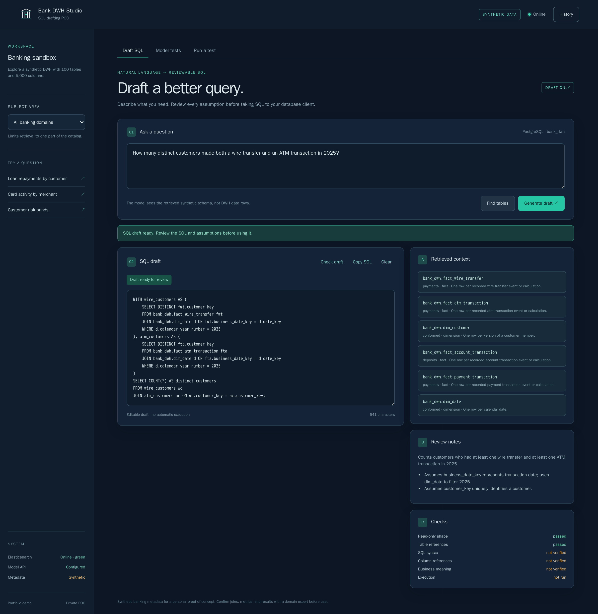
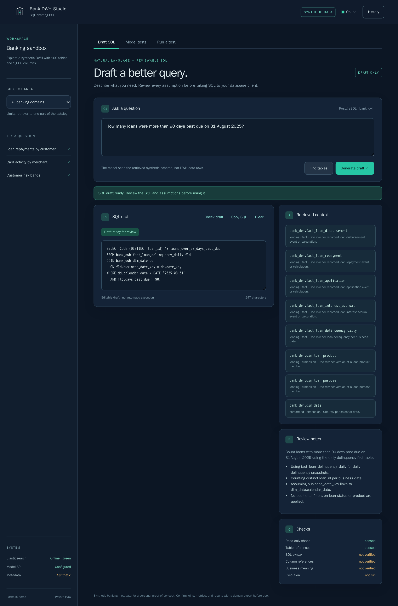
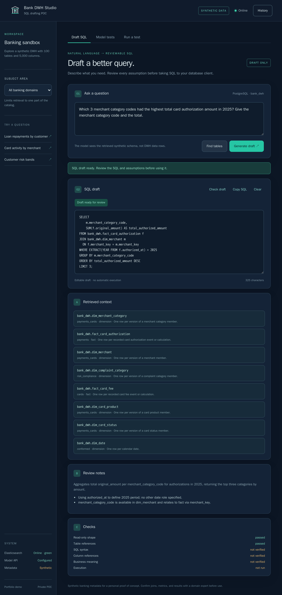
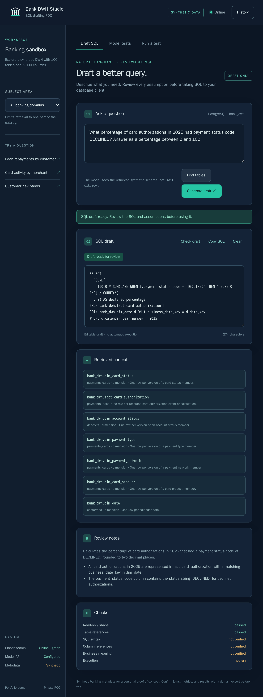
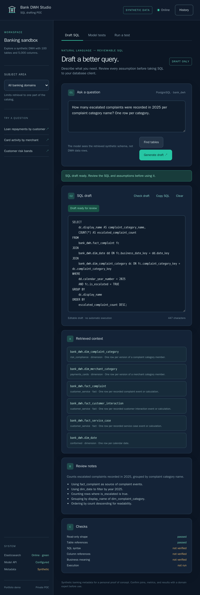
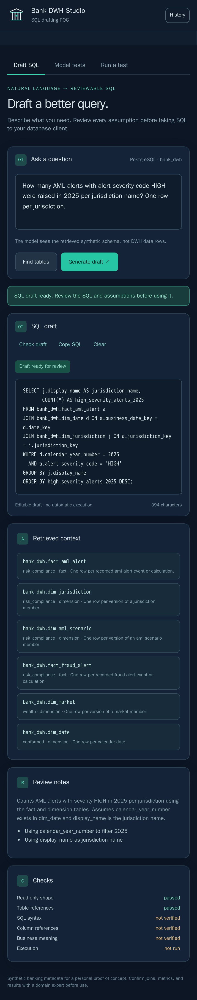
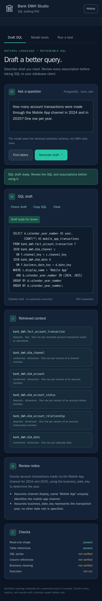
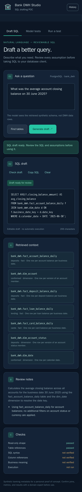
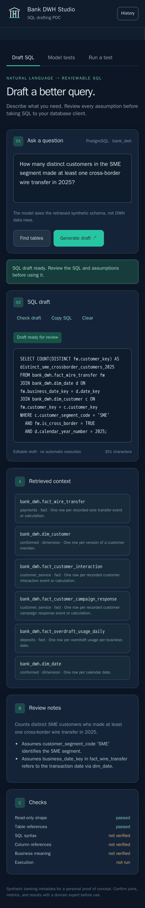
Die App erstellt SQL-Entwürfe; sie verbindet sich nie mit einem Bank-Data-Warehouse und führt keine Abfragen aus. Nutzer bearbeiten oder kopieren das Ergebnis und führen es separat in ihrem eigenen Datenbank-Client aus. Der Browser erhält den API-Schlüssel des Modells zu keinem Zeitpunkt.
Automatisierte Prüfungen decken die schreibgeschützte Form der Anweisung und Verweise auf bekannte Tabellen ab. SQL-Syntax, Spaltenverweise und fachliche Bedeutung müssen weiterhin von Menschen geprüft werden. Alle Namen, Beziehungen und Kennzahlen im Warehouse sind synthetisches Testmaterial und keine freigegebenen bankfachlichen Definitionen.
Der bereitgestellte Proof of Concept betreibt ein Node-Backend und Elasticsearch als rootless Container auf einer Oracle Ampere A1-Instanz und erstellt SQL-Entwürfe mit gpt-oss-20b über einen gehosteten Anbieter. Das Repository dokumentiert auch eine breitere zukünftige Architektur, klar getrennt vom kleineren bereitgestellten POC.
Eine kleine Konsole für Einladungen und Geräte in privaten Web-Apps.

Ein kleiner Baustein, mit dem Web-Apps offline funktionieren und aktuell bleiben.
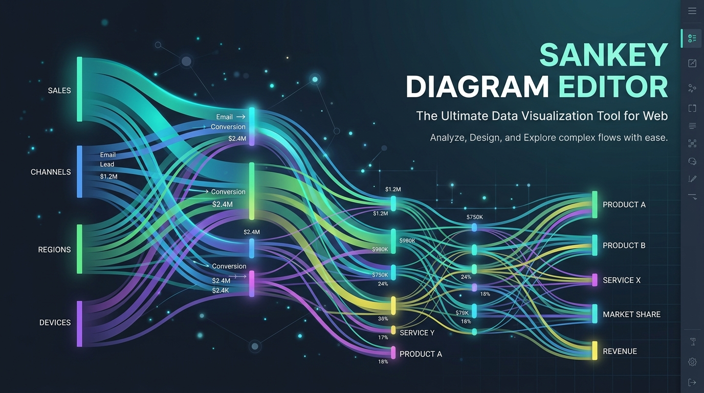
Zeige, wohin Dinge fließen. Erstelle und exportiere Diagramme im Browser.